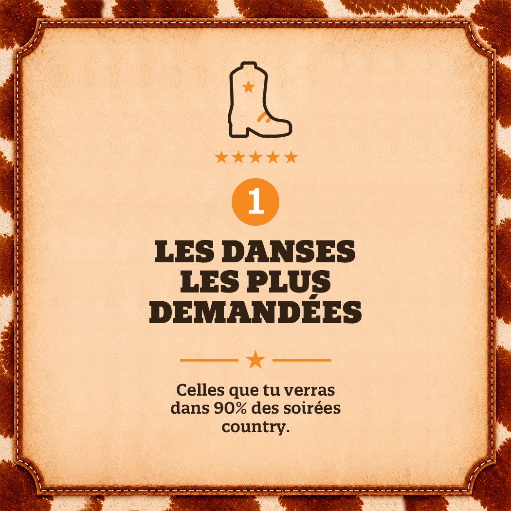
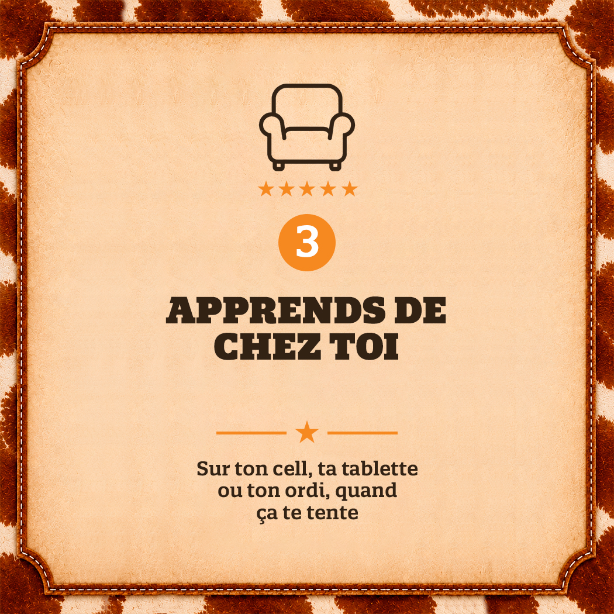
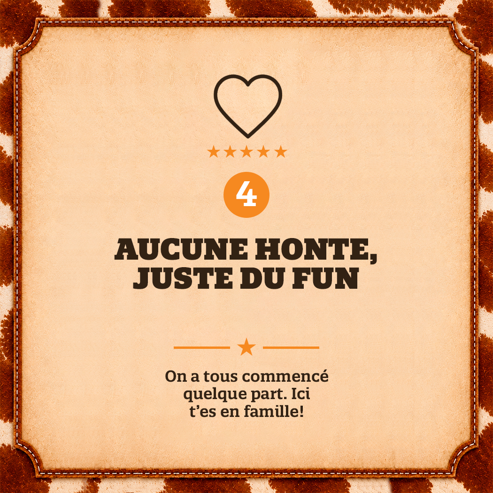
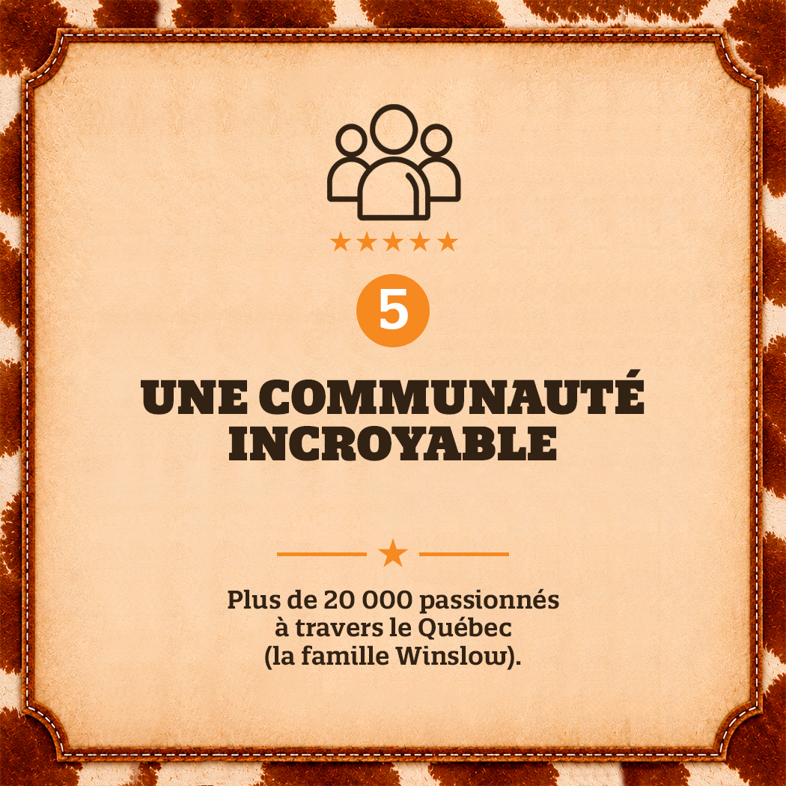
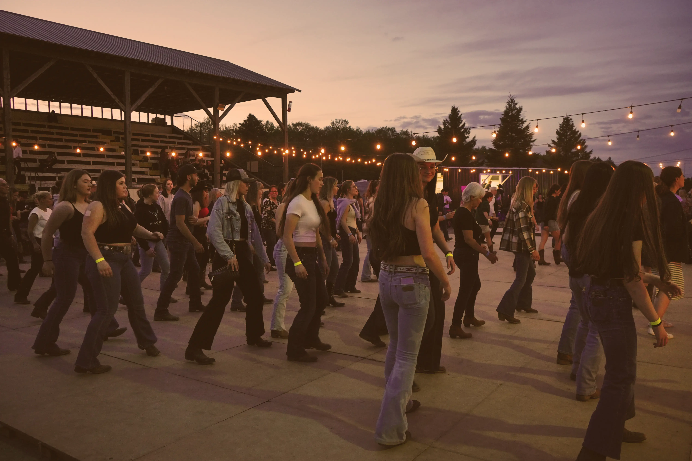

Attention: À tous les danceurs
Apprends 20 danses populaires avec notre guide gratuit.





Notre histoire
Tout a débuté en Estrie à Stornoway en 2006. Nous n'avons cessé de grossir depuis, mais avons conservé nos valeurs de famille et de communauté. Pour nous, le contact avec les gens est la base de tout. Nous sommes passionnés de danse country et souhaitons partager notre passion avec le plus de personnes possible. Ici, il n'y a aucun jugement! Que vous soyez débutant ou avancé, jeune ou plus expérimenté, curieux ou complètement mordus, vous serez toujours les bienvenus!
Nous donnons des cours dans 10 régions différentes au Québec et sommes sans cesse en expansion. Notre équipe compte d'ailleurs plus de 35 instructeurs. Nous offrons de nombreuses soirées de danse intérieures et extérieures, durant l'été. Vous pouvez également nous retrouver dans des événements, des festivals, des expositions et même dans vos partys privés! Nous possédons également notre propre plateforme de formation en ligne! Embarquez avec nous dans le merveilleux monde de la danse country!
Voir la programmationC'est le moment de danser
Remplis le formulaire ci-dessous pour rejoindre la communauté Winslow et recevoir instantanément ton guide gratuit.